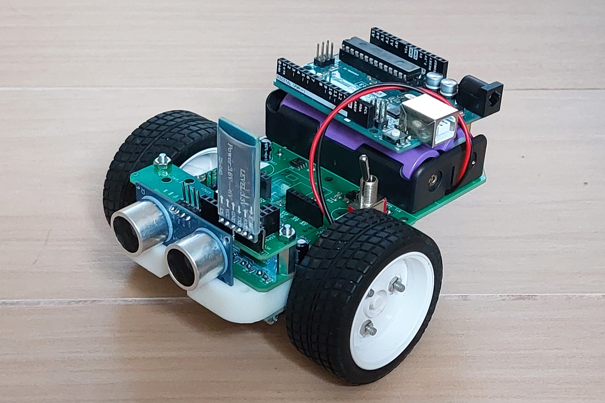
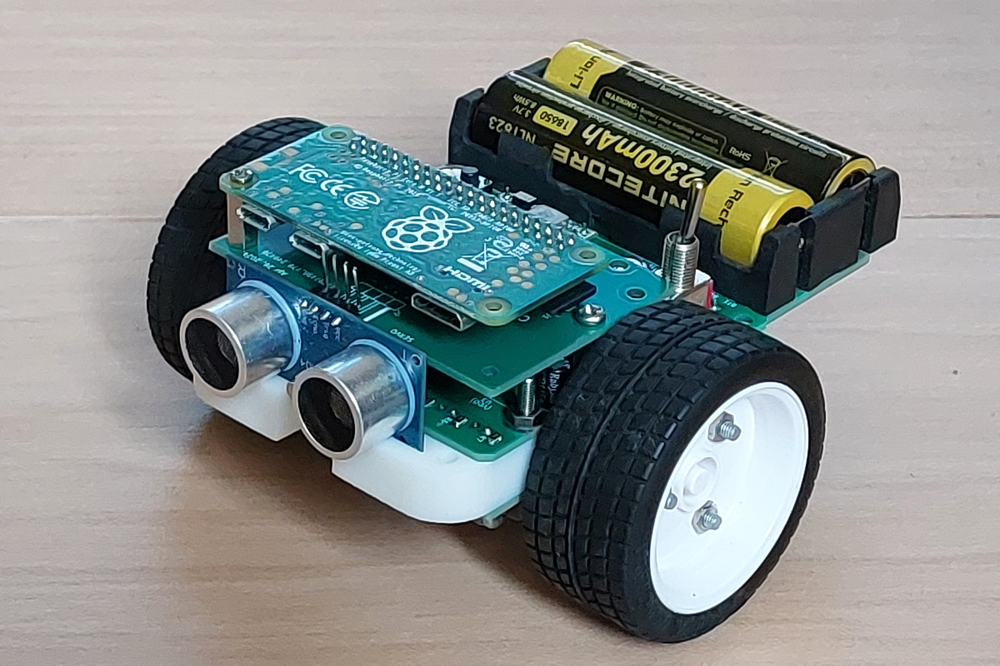
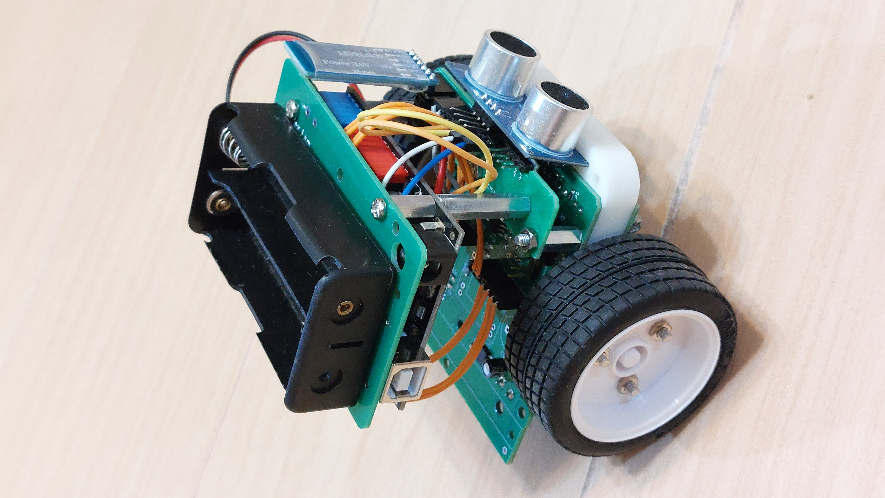
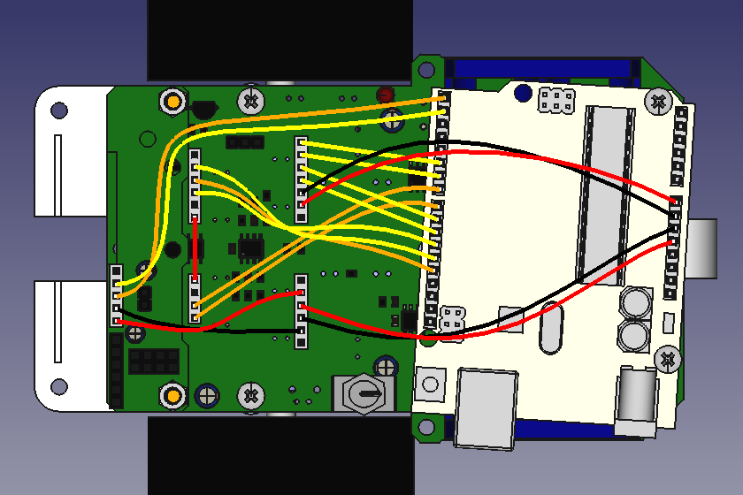
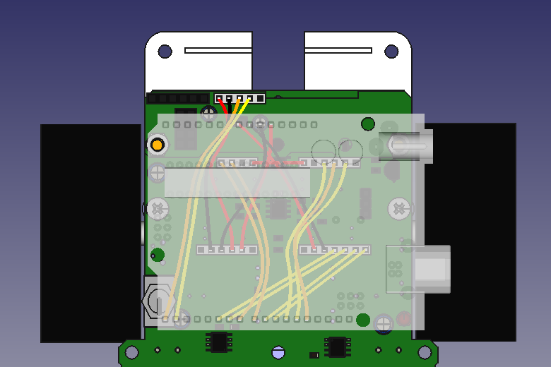

DIY AUTONOMOUS CAR
Finished car
Materials in DIY kit
It is a chassis with electronics designed for STEM education in high school. The design criteria are:
- compact size for students bringing along and storage at school
- simple structure for easy construction and maintenance
- durable gearbox: Tamiya double gearbox 70168
- basic functions: dc motor drivers, wheel encoders, line tracking sensors
- provide connections to modules HC05, ESP01, GY521
- configurable: robot car, balancing robot
- compatible with Arduino and Raspberry Pi: logic voltage selectable between 5 volt and 3.3 volt
- rechargeable batteries: Li-ion 18650
It is a DIY kit. Students need to do:
- prepare encoder gear: hand-drilling 32 holes
- assemble gearbox: it is fun to build Tamiya models
- soldering: about 50 joints
- car assembly: about 16 screws
The following materials are required to build the car but not included in kit:
- Arduino Uno R3
- Tamiya double gearbox 70168
- Tamiya tire set 70111
- Li-ion batteries 18650

Arduino Uno R3

Raspberry Pi Zero

Balancing Robot

Arduino Uno Wiring Diagram

Balance Robot Wiring Diagram